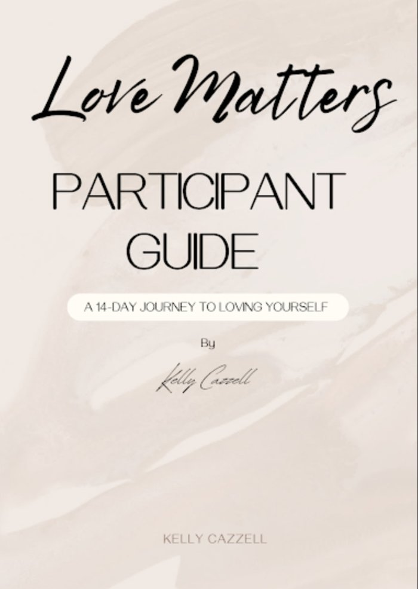

Speaking
Kelly Cazzell
Kelly Cazzell is the creator of Love Matters, a Scripture based program that helps women learn to love themselves well and live on purpose. She spent more than 15 years as a civil engineer designing bridges, so she still finds herself asking what’s actually holding a life up.
Learning to love herself well changed how Kelly treated herself and how she made decisions. It became central to her own healing, and it’s why she believes the way we love ourselves can change every part of our lives.
She draws on how Jesus lived and talks about what that looks like in everyday life, with a little humor and no pretending.
Kelly lives in northern Utah with her two grown kids and her two very energetic dogs, Goose and Gunner.
Watch
A Sample of Kelly’s Teaching
Signature talk
Love Yourself…Change Your Life
We hear “love your neighbor as yourself” all the time, but rarely stop at the second half. Kelly walks through what Scripture says love actually is (patient, kind, safe) and what changes when women start treating themselves that way.
What audiences take away
A clear picture of love
What loving yourself is and isn't, grounded in 1 Corinthians 13 and how Jesus treated people.
Permission to stop abandoning themselves
How to notice self-abandonment and choose themselves without guilt.
Small, steady next steps
Simple habits and boundaries that hold a life up, physically, emotionally, spiritually and financially.
Draft takeaways from the Love Matters lessons. Kelly to confirm or replace.
For churches & women's ministries
Bring Love Matters to your women's group
Kelly can walk your group through Love Matters together: the 14 days of short videos, the Participant Guide, and time to talk about it with the women who'll be walking alongside each other.
It pairs well with a speaking event: open with the signature talk, then keep going as a group.
